HKU iGEM 2026 · Dry Lab · Mathematical Model V3
Our wound patch carries two molecules: the anti-inflammatory peptide V14 and the growth factor FGF2-G3. To understand how the patch behaves, we built a set of linked mathematical models that run from the choice of the peptide itself, through release from the hydrogel into the wound tissue, onto the receptor, and through to wound closure.
The aim of this work is not to build the most complex model possible, but one that is detailed enough to choose the payload, to guide the design of the patch, and to tell the wet lab which experiment to do next.
Overview
The modelling runs as a chain. A screening model sits at the front and answers a question that has to be settled before anything else is worth computing: is this peptide a usable payload at all? Downstream of it, seven linked models take the amount of drug we load into the hydrogel and carry it to a healing outcome, along two arms — a V14 arm (release, transport, receptor binding, signalling, nitric oxide) and an FGF2-G3 arm (release, transport, fibroblast growth, closure). The two arms meet at a single point, where the therapeutic state of the tissue sets the closure rate. Without that meeting point this would be two unrelated models rather than a model of a combination patch.
Before any of that is worth computing, it is worth saying what the wound is doing, because every model below is a quantitative statement about one link in it.
Acute wounds pass through haemostasis, inflammation, proliferation and remodelling. Chronic wounds — diabetic foot ulcers, venous leg ulcers, pressure ulcers — stall between the second and the third, held there by a loop that sustains itself:
This is the argument for a two-payload patch rather than a simpler one. Adding growth factor alone puts substrate into a compartment full of the proteases that destroy it, which is the documented failure mode of exogenous growth-factor therapy in chronic wounds (Yager et al., 1997). The inflammatory drive has to come down and the proliferative drive has to go up. V14 does the first, FGF2-G3 the second, and Model 6 is where the two meet.
The chain reads as follows.
| Stage | Question it answers | Status |
|---|---|---|
| Peptide suitability | Which candidate peptide can survive the wound and the hydrogel long enough to be a payload? | Predictive now — sequence-derived, with one measured input |
| Model 1 · release | How fast does each molecule leave the gel? | Predictive now |
| Model 2 · tissue transport | How deep into the dermis does it get, and for how long? | Predictive now |
| Model 3 · MD2/TLR4 competition | How much receptor does V14 block against a given endotoxin load? | Predictive in scaled form, before KD,P is measured |
| Model 4 · NF-κB signalling | How does receptor blockade translate into transcriptional output? | Predictive in scaled form |
| Model 5 · iNOS → nitrite | What will the Griess assay actually read? | Structure fixed, awaiting data — the fitting routine is written and tested on synthetic data; the measured Griess curve is not yet in hand |
| Model 6 · Fisher–KPP closure | Does the wound close, and how fast? | Structured hypothesis — Tier-4 throughout, nothing planned constrains it |
| Model 7 · design inversion | Given a wound, what must the device do? | Inherits the confidence of whatever it is inverting |
The parts are not equally well supported, and we have marked this everywhere rather than presenting the chain as uniformly reliable. Models 1–2 can be used to make predictions now, because their parameters come from the V14 sequence, the patch geometry and the literature. Models 3–5 are used in scaled form, so they run before any binding affinity is measured. Model 6 is a structured hypothesis: its coupling functions are phenomenological and no planned experiment constrains them yet. Every parameter in the register carries a provenance tier, and where a value is Tier 3 or Tier 4 the tier, rather than a citation, is the statement of confidence.
The patch is a single acellular calcium-alginate hydrogel layer, 2.5 mm thick:
1 % w/v sodium alginate, cross-linked with 100 mM calcium chloride, in HEPES-buffered
saline at pH 7.4. Its outer face is sealed by an impermeable backing and its inner face sits
on the wound bed. Two active molecules are mixed into the gel during casting: V14
(SVQELLELLAAGL, 1355.59 Da), variant 14 of our own de novo designs
against the TLR4/MD2 complex, and FGF2-G3, an engineered, highly stable growth factor. The
device contains no live bacteria.
A note on naming. V14 and
αTI-14 are the same molecule: SVQELLELLAAGL. The peptide-screening
document uses αTI-14 and the device models use V14. This page uses V14 throughout and gives
the alias at first mention in each section.
Peptide suitability
A peptide that blocks its target in a cell-culture assay can still fail as a patch payload if it oxidises, aggregates, or is cut up faster than the patch releases it. We built a three-module screening model that takes an amino acid sequence and returns a gated verdict. Our iteration-1 candidate, TAP2, fails the structural gate — two cysteines and three tryptophans. Our de novo iteration-2 peptide V14 (αTI-14) passes all three modules, with a composite score of S ≈ 1.00. The model is the reason we stopped trying to formulate TAP2 and designed our own peptide instead.
Chronic wounds are hostile to peptides. Total MMP-9 runs roughly sevenfold higher than in surrounding tissue, mostly in activated form (Moor et al., 2009); neutrophil elastase is present (Ai et al., 2004; Yager & Nwomeh, 1999); and chronic wound fluid degrades exogenously added peptide growth factors outright (Yager et al., 1997). Selecting a payload on target affinity alone ignores all of this.
Of the nodes in that loop we target the receptor complex, for three reasons.
It is upstream of everything else. MMP expression, iNOS induction and cytokine release are all downstream of NF-κB, so blocking at the receptor suppresses the whole program rather than one product of it. Inhibiting a single MMP leaves the drive intact.
The node is druggable and the mechanism has in vivo support. Blocking TLR4–MD2 dimerisation specifically, rather than TLR4 generally, has been shown to suppress inflammatory macrophage activation and improve diabetic wound healing, with the effect lost in Tlr4-knockout animals (Liu et al., 2023). That study delivered its inhibitor from a hydrogel microneedle patch — close to our own delivery concept, and part of why we think the route is feasible rather than merely attractive.
Competitive antagonism is a mechanism we can model exactly. Because a peptide and LPS contend for the same MD2 pocket, the system reduces to the competitive-occupancy expression that Model 3 develops, in which the required dose depends on endotoxin load through a single scaled group. We use a peptide rather than a small molecule because MD2 presents a protein–protein interface, and because a peptide can be designed sequence-up for the developability properties the wound demands — which is what this model exists to score.
The form of the composite is a modelling choice with consequences, so it is worth stating why it is a product rather than a weighted sum. A weighted sum lets a candidate average its way out of trouble: an exceptional binder with two cysteines would still score respectably, because a high sA compensates for a low sB. A geometric mean does the opposite — any sub-score near zero drags the whole composite toward zero, which is the correct behaviour when the modules represent independent ways the payload can fail. A peptide that binds beautifully and aggregates in the gel is not two-thirds of a good payload. It is not a payload.
Even a product is not enough on its own, which is why the verdict is gated rather than thresholded on S. A gate encodes a statement of kind, not of degree: two cysteines mean an intramolecular disulfide can form, so the molecule needs an oxidative-folding step and can exist as a mixture of species. That is a different category of problem from being somewhat less potent, and collapsing it into a single number would hide it. The composite then describes how comfortably a candidate passes, and the gates decide whether it passes.
We deliberately did not fit a classifier. The entire labelled reference set is five literature peptides plus our own, and at that sample size any machine-learned decision boundary would be fitting noise while looking authoritative. A transparent rule whose constants are stated as design choices is the more honest instrument here, and it has the practical advantage that a reader can recompute every number in the table by hand. The sub-scores are monotonic maps into [0, 1] rather than calibrated probabilities, and we do not report them as probabilities: they encode the direction of a developability argument, not its likelihood.
The model evaluates three independent modules, each returning a sub-score si ∈ [0, 1]. The composite is their geometric mean, and the verdict is gated by the two sequence-level modules — a peptide cannot average its way past a structural disqualification:
The payload competes with LPS for MD2. Using the competitive-binding expression that Model 3 develops in full, the fraction of MD2 held by the inhibitor and the resulting blockade fraction are
The sub-score compares the candidate's half-maximal inhibitory concentration in a cell-based LPS-binding assay against a literature benchmark, sA = min(1, Cbench/C50cand) with Cbench = 100 µM. The benchmark is set by MD2-I, the MD2-loop-mimetic peptide and the only sequenced TLR4/MD2-antagonist peptide with a reported effective concentration in a cell LPS-binding assay, which blocks LPS binding at 0.1 mM (Slivka et al., 2009). A candidate that cannot match this is not competitive with the published state of the art. The cap at 1 encodes saturation: once a candidate matches the state of the art, further potency does not make it a better patch payload, so Module A discriminates only below the benchmark.
Two weaknesses in this module are worth stating plainly, because they limit how much the comparison is worth. The benchmark set has n = 1. And by Model 3's own algebra, a cell-assay blocking concentration is KD,P(1 + [L]/KD,L), so it depends on the endotoxin load of the assay it was measured in — which is not reported for MD2-I and which differs from ours. Comparing V14's 25 µM against MD2-I's 0.1 mM is therefore not a ratio of affinities, and we do not claim it as one. It says that V14 is in the right concentration range for a cell-based blocking effect, and no more than that.
Two residue classes carry developability risk in a hydrogel sitting on an oxidising wound.
Cysteine. Cys residues form intramolecular disulfides and shuffle partners in a ROS-rich wound, producing a heterogeneous population of species with uncertain activity, and requiring an oxidative-folding quality-control step in production. The MD2-I antagonist illustrates both the power and the cost of this chemistry: its activity depends on a correctly formed Cys95–Cys105 bridge (Slivka et al., 2009). We use sB,Cys = 1 − nCys/(nCys + 1), which falls from 1 at zero Cys to 1/3 at two.
Tryptophan. Trp is the most aggregation-prone amino acid. A Trp-rich payload loaded into a hydrogel at high concentration risks aggregation, which lowers the free concentration C0 that the release model assumes (Shi & McHugh, 2023). We apply a monotonic penalty sB,Trp = exp(−0.5 nTrp), and sB = sB,Cys · sB,Trp.
The gate is nCys ≤ 1, and it is justified structurally rather than numerically: with fewer than two cysteines no intramolecular disulfide pair can form, so the peptide needs no oxidative-folding step and cannot suffer disulfide-pairing heterogeneity. The decay rate 0.5 in the Trp term is a design choice, not a measurement — there is no quantitative aggregation model in the literature that supports a specific functional form, and we say so rather than implying the constant is derived.
Expected serum half-life is estimated from the sequence with the Cavaco regression, fit on 129 unmodified peptides with experimentally determined half-lives (validation R² ≈ 0.76; Cavaco et al., 2021):
where nNP% is the percentage of nonpolar residues (A, V, L, I, M, F, W, P, G), W[0,1] flags at least one Trp, Y[0,1] flags two or more Tyr, and pI[0,1] flags an isoelectric point ≥ 10. Serum is the conservative standard fluid; chronic wound exudate is harsher, so this is an optimistic upper bound on wound-fluid stability, not a prediction of it.
The sub-score then races degradation against release. Model 2 gives the release half-time of a slab of thickness L as t1/2,rel ≈ 0.196 L²/Deff, and a payload only works if it survives longer than the patch takes to let it go:
For the patch as built — 2.5 mm of 1 % calcium alginate, Deff = 3.48×10−6 cm²s−1 for V14 — this gives t1/2,rel = 59 minutes, consistent with Model 1's 95 % release in 5.6 hours.
This has moved twice, so it is worth stating the history rather than just the answer. The original screen used a release half-time of 2–22 h carried over from a thicker gel, and TAP2 appeared to fail on stability; it does not, it fails on Module B. Recomputed on the 0.5 mm patch, t1/2,rel was 2.3 minutes and every candidate cleared Module C, including the 0.6 h TAP1 — the gate did no work at all. At the 2.5 mm thickness now built, t1/2,rel is 59 minutes, so the gate asks for a serum half-life of roughly an hour and TAP1, TAP2 and MD2-I fail it.
The survivors are the same either way — V14 and MD2-II — so no selection decision ever depended on this, and structural burden remains the module that separated the candidates. What changed is that stability is now a live criterion rather than a vacuous one. It still also matters after release, as the tissue-side kprot in Model 2, which is why measuring it is the top wet-lab ask on this page.
Net charge and pI are from Henderson–Hasselbalch titration at pH 7; t1/2serum from the regression above; sC computed against t1/2,rel = 59 min for the as-built patch. TAP1 and TAP3 are the sibling phage-display peptides of TAP2 (US 10,435,443); MD2-I is the active and MD2-II the inactive (Cys95Ala) MD2-loop antagonist.
| Peptide | Charge | pI | Nonpolar % | nTrp | nCys | t1/2serum (h) | sB | sC | Gates |
|---|---|---|---|---|---|---|---|---|---|
| TAP1 | +4.0 | 11.5 | 45.0 | 0 | 0 | 0.6 | 1.00 | 0.95 | B pass · C pass |
| TAP2 | +0.9 | 8.2 | 61.1 | 3 | 2 | 0.9 | 0.07 | 0.97 | B FAIL · C pass |
| TAP3 | +0.9 | 8.1 | 44.4 | 3 | 2 | 1.3 | 0.07 | 0.98 | B FAIL · C pass |
| MD2-I | −1.1 | 4.3 | 29.4 | 0 | 2 | 0.7 | 0.33 | 0.96 | B FAIL · C pass |
| MD2-II | −1.1 | 4.3 | 35.3 | 0 | 1 | 1.0 | 0.50 | 0.97 | B pass · C pass |
| V14 (αTI-14) | −2.0 | 3.1 | 69.2 | 0 | 0 | 6.1 | 1.00 | 0.99 | B pass · C pass |
| Module | Criterion | TAP2 (iteration 1) | V14 (iteration 2) |
|---|---|---|---|
| A | C50 vs 100 µM benchmark | Confirmed, literature-active | Confirmed — 25 µM, measured in-house |
| B | nCys ≤ 1 | Fail — 2 Cys, 3 Trp | Pass — 0 Cys, 0 Trp |
| C | tdeg ≳ t1/2,rel | Fail — 0.9 h vs 59 min | Pass — 6.1 h vs 59 min |
| Composite S | ≈ 0.41 | ≈ 1.00 | |
| Verdict | Unsuitable — Module B gate | Suitable | |
Read the composite with care: it is close to uninformative for this device. sA is capped at 1 by construction, and because the patch empties in minutes sC sits between 0.95 and 0.99 for every candidate in the table. So S is carried almost entirely by sB, and V14's S ≈ 1.00 restates that it has no Cys and no Trp rather than adding anything. The gates, not the composite, are what decide a verdict here — TAP2's S of 0.41 is not what disqualifies it; failing nCys ≤ 1 is.
TAP2's activity is well documented (Park et al., 2017; Park et al., 2020; Yin et al., 2019), but the source reports binding as SPR kinetic evidence against immobilised MD2 and TLR4/MD2 rather than a single equilibrium KD, so TAP2 cannot be placed on the quantitative C50 axis and is recorded as a qualitative pass in Module A.
What disqualifies it is Module B. Two cysteines impose a folding requirement and a disulfide-shuffling risk in an oxidising wound, and three tryptophans create an aggregation liability at hydrogel loading concentrations. The model's failure verdict matched our wet lab's experience with TAP2, and it redefined the design goal: from finding a binder to finding a binder that survives the wound and the hydrogel. That is what sent us to de novo design.
V14 was the result. It has no cysteine and no tryptophan, so there is no folding step, no disulfide shuffling and no aromatic aggregation burden (sB = 1). Its predicted serum half-life of 6.1 h is about sevenfold TAP2's, driven by high nonpolar content and the absence of Trp. And its binding is measured rather than inferred: competitive blockade of LPS–TLR4/MD2 binding at 25 µM in a flow-cytometry assay on PMA-differentiated THP-1 macrophages, fourfold below the 100 µM literature benchmark.
Two things in the table are worth dwelling on, because they show the model is doing real work rather than rubber-stamping our own design. MD2-I — the literature benchmark, a genuinely active antagonist — fails Module B, because the model penalises exactly the disulfide chemistry its activity depends on. And MD2-II, the deliberately inactive Cys95Ala control, passes both sequence gates. Neither is a contradiction: Module B scores developability as a patch payload, not intrinsic activity, and Module A is what excludes MD2-II. It does mean the three modules are only meaningful together, and that a single composite number should never be read on its own.
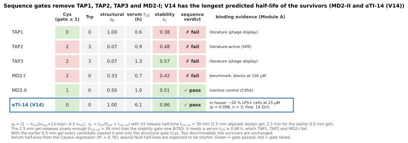
| Assumption | Biological basis | What breaks if it is wrong | How to test it |
|---|---|---|---|
| The serum half-life proxy transfers to wound exudate | No sequence regression exists for exudate; serum is the nearest fitted standard. | Module C becomes optimistic by an unknown factor. Exudate protease activity is higher and more variable than serum. | HPLC stability in exudate or with recombinant MMP-9 / elastase, replacing the estimate with a measured kdeg. |
| Cys and Trp are the dominant developability risks | Disulfide shuffling in an oxidising wound and Trp-driven aggregation at loading concentrations are the two failure modes we can predict from sequence alone. | Module B misses a liability it does not encode — deamidation, oxidation of Met, or charge-driven binding to the gel. | Forced-degradation study on the candidate; LC-MS for modified species. |
| A cell blocking concentration is comparable across assays | It is the only quantity reported for the single sequenced benchmark. | Module A. The blocking concentration depends on the assay’s endotoxin load, which is unreported for the benchmark, so the comparison is not a ratio of affinities. | Measure both peptides in one assay at matched [LPS], or compare KD directly. |
Models 1 and 2
The patch releases its load as a single burst rather than a sustained supply. From the 2.5 mm alginate gel as built, V14 reaches 95 % release of its mobile dose in 5.6 hours and FGF2-G3 in 14.8 hours, while wound closure takes 7–55 days. The 2.6× difference between the two molecules comes only from their size, because plain alginate binds neither of them.
The obvious cheaper choice would be a compartmental ODE — gel compartment, tissue compartment, rate constants between them. We did not use one, because the answer we need is a gradient. A well-mixed compartment has, by construction, one concentration everywhere inside it; but the macrophages we are trying to reach sit near the surface, the clearance sink sits at the dermal base, and the entire question of how long tissue stays above target is a question about the shape of the profile between them. A compartment model cannot represent that shape, so it could not have produced the coverage window, the depth-dependence, or the lower-bound argument.
Within the PDE, each term is there for a reason that can be checked. Transport is Fickian because both payloads are dilute, uncharged with respect to the gel, and there is no evidence of concentration-dependent mobility; the mesh correction H(a,ξ) comes from Amsden obstruction scaling, which was derived for exactly this geometry — a solute sphere moving through a fibrous polymer network — rather than being a fitted fudge factor. Degradation is first order because proteolysis of a dilute substrate by an enzyme pool in excess is pseudo-first-order in substrate. FGF2-G3 alone carries a Michaelis–Menten sink, because receptor-mediated uptake saturates and V14 has no equivalent mechanism.
We solve the gel and the tissue as two coupled domains with an explicit interface rather than smearing them into one effective medium. That costs more to solve, but an effective medium would destroy the two things that matter most: the partition at the interface, and the fact that the two phases have genuinely different diffusivities and porosities. The flux-matching condition is what conserves mass across that seam, and the porosity convention inside it is precisely where our earlier version went wrong.
Reducing to one spatial dimension is justified by aspect ratio: the patch is centimetres across and 2.5 mm thick, so over the region that feeds a millimetre-scale wound the lateral gradients are negligible compared with the axial one. This is a geometric argument, not a convenience, and it would fail for a patch comparable in width to its thickness.
Release half-times are 59 minutes for V14 and 154 minutes for FGF2-G3. The gap between the release curves and the closure window is the central result of this section: the two timescales differ by roughly 300–2000× for the as-built gel. Three consequences follow.
First, the gel diffusivity cannot be identified from closure data and has to be fitted from the release assay. Second, the model predicts only a small closure benefit from an unmodified gel — this is a prediction of the model, not a failure of it. Third, if release kinetics are to matter for efficacy at all, retention would have to be added to the gel; Model 7 asks what that would achieve, and the answer is less than we expected.
Our gel is plain alginate, which binds neither molecule: FGF-2 showed no measurable binding to unmodified alginate (Freeman et al., 2008), and V14 has no hydrophobic surface to stick to. Any retention analysis on this device is therefore a counterfactual, and we label it as one.
Because the release problem has a corner singularity at (x, t) = (0, 0), where loaded gel meets a perfect sink and ∂C/∂x diverges as t−1/2, Crank–Nicolson oscillates there and the solver uses Rannacher startup. This has a direct experimental consequence: integrating the release flux on a uniform time grid would over-count early release several-fold, so the release assay must be sampled on a log time grid starting around 10 s. About a third of the V14 is out in the first minute; minute-scale sampling would miss most of the kinetics.
All concentrations in the model are interstitial, meaning mol per cm³ of pore fluid. For a porous medium with superficial flux N = −εDp∂xC, conservation gives ∂t(εC) = ∂x(εDp∂xC). For uniform porosity ε, it cancels and does not appear inside the PDE. Our earlier version applied it twice, once in the diffusivity and once in the concentration basis, which under-predicts spreading.
Porosity enters in only two places: the flux matching at the interface, and the conversion of loaded mass to concentration. At ξ = 14 nm, the mesh size measured for 1 % calcium alginate (Grassi et al., 2009), this gives Deff = 3.48×10−6 (V14) and 1.33×10−6 cm²s−1 (FGF2-G3), using the correlation hydrodynamic radii of 0.87 and 2.34 nm with D0 = 3.6 and 1.5×10−6 cm²s−1, and an alginate porosity of 0.99. These are the values every figure on this page is plotted from. The register also tabulates an anhydrous-sphere alternative (radii 0.73 and 1.68 nm, Deff = 4.37 and 1.85×10−6), which would give 4.5 h to 95 % release rather than 5.6; those radii are lower bounds on the true hydrodynamic size, so we carry them as the fast edge of the sensitivity range and not as the headline. The gel barely slows either molecule: steric hindrance is mild for V14 and moderate for FGF2-G3, and across the whole 5–50 nm mesh range the effect on release is small. The mesh size is measured on 1 % calcium alginate (14 nm mechanically, 26 nm from release), not yet on our own gel.
These four spatial conditions close the two coupled second-order domains, which we solve together as one system. Clearance to the circulation is imposed only at the deep boundary, so neither tissue equation carries a distributed clearance term: the two would describe the same physics. Our earlier version imposed both, which suppressed the tissue concentration twice. The only volumetric losses in the tissue are proteolysis, plus thermal denaturation and receptor uptake for FGF2-G3.
Release is reported as the cumulative fraction leaving the gel face, obtained by integrating the interfacial flux:
For the special case of a perfect sink with first-order loss the problem has a closed-form solution — the Crank series. This is what the solver is verified against, and it is why the release curves carry no numerical error:
The early-time √t limit is why the release assay must be sampled logarithmically: the steepest part of the curve is over before a minute-scale grid takes its second point. Two dimensionless groups then say whether either loss term matters on the relevant length scale — the Damköhler number for degradation inside the gel, and the penetration depth in tissue:
Λ is what rules out a zero-flux deep boundary: it is 1.1 mm at k = 10−4 s−1 and 11 mm at 10−6, against a dermis of 1–2 mm, so the far field is never far enough. Finally, two quantities leave this section and become the inputs to the rest of the chain — the interfacial V14 concentration drives Model 3, and the FGF2-G3 concentration averaged over the active band δ drives Model 6:
| Assumption | Biological basis | What breaks if it is wrong | How to test it |
|---|---|---|---|
| Transport is one-dimensional and diffusive | The patch is wide relative to its 2.5 mm thickness, so lateral gradients are small; no bulk convection is imposed. | Exudate flow in a heavily exuding wound is convective and outward, which would carry drug away from the tissue rather than into it. | Measure exudate production rate; add a Péclet number and a convective term if it is not small. |
| The gel is a fixed 2.5 mm reservoir | The patch is cast at that thickness and modelled as geometrically stable. | Calcium alginate absorbs exudate and slowly dissolves as sodium displaces calcium. Swelling dilutes the reservoir and shortens the change interval. | Weigh gels in simulated wound fluid over 24 h. |
| Alginate binds neither payload | FGF-2 shows no measurable binding to unmodified alginate (Freeman et al., 2008), and V14 has no hydrophobic surface and a net charge of −2. | Nothing for this build — it is why RV = 1 is locked. It is what makes the retention analysis a counterfactual. | Release assay against gel with and without the payload pre-equilibrated. |
| Tissue is a homogeneous porous medium | A single effective diffusivity and porosity stand in for dermal collagen, cells and interstitium. | Local accuracy. Real granulation tissue is spatially heterogeneous and changes as the wound heals, so Deff is not constant in time. | Fit Deff from a tissue-penetration time course rather than assuming it. |
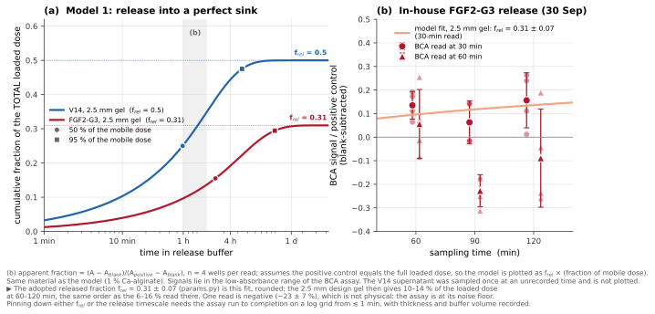
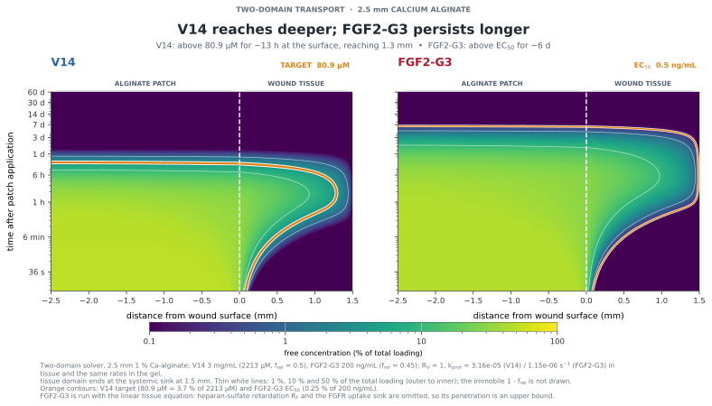
Before using any result, we checked the solvers against known answers. The release solver converges at second order against the closed-form Crank series, with maximum error falling from 5×10−5 at 100 grid points to 1.93×10−7 at 1600 — a factor of 4 per refinement. The numerical Fisher–KPP front speed matches the analytic value to within 1.8–6.2 %, sitting just below the analytic line as expected for a discretised pulled front. The two-domain solver is checked four ways. Verification of this kind establishes that the solvers reproduce known answers; it is not validation against experiment, and we do not present it as such.
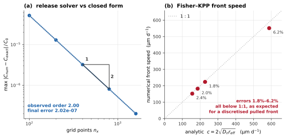
The two arms have different target cells in different places, and this is what sets the geometry of this section.
V14 targets macrophages, which concentrate in the inflamed superficial wound bed, close to the patch interface. That matters for how we report coverage. Concentration falls with depth, so a time-above-target computed from the depth-averaged concentration is a lower bound on what the macrophage population actually sees. We report the lower bound deliberately rather than quoting the more flattering interfacial value.
FGF2-G3 targets fibroblasts, which sit deeper, in the granulation tissue being built. This is why the model averages FGF2-G3 over an active band δ rather than taking its interfacial value — and it is why the two arms cannot be validated together in vitro without a co-culture, since one is assayed on macrophages and the other on fibroblasts.
The deep boundary is a sink because the dermis is vascularised. Drug reaching the dermal capillary bed is carried away systemically, which is why the model imposes a Dirichlet condition there rather than a reflecting one. That choice is biologically right in kind. Its depth is less certain: dermal anatomy places a vascular plexus well above the 1.5 mm boundary we use, so clearance plausibly begins shallower than the model assumes. If it does, residence time is over-estimated and the single-patch window is shorter than 8.7 h. We have not resolved this, and it is the assumption in this section most likely to be wrong in the optimistic direction.
Where the drug ends up: the 1.5 mm dermis drains the gel reservoir into the systemic sink within hours, whatever the proteolysis rate. Our macrophage target sits in a thin surface band where concentration is always above the depth average, so a time-above-target computed from the depth average is a lower bound — we report it that way deliberately rather than quoting the more flattering surface value.
Model 3
The V14 arm can be run before any binding affinity is measured. In the scaled variables ψ = CV/KD,P and a = [L]/KD,L, fourteen parameters reduce to four, and half-maximal suppression occurs at ψ50 = 1 + a exactly, with no fitted constant. Measuring KD,P rescales the axis, so it calibrates the model but is not needed to run it.
Model 3 uses equilibrium mass action rather than a kinetic scheme with explicit kon and koff. The justification is a separation of timescales: peptide–receptor binding equilibrates on the order of seconds to minutes, while the delivery profile it reads from Model 2 changes over hours. On the timescale that matters, occupancy tracks concentration essentially instantaneously, so carrying the kinetics would add two parameters we cannot measure and would change no prediction. This is an assumption with a test attached: if SPR showed a dissociation half-life comparable to the delivery timescale, the quasi-equilibrium treatment would have to go — and the patch would in fact perform better than modelled, not worse, since slow release of the peptide from the receptor would extend its action.
The competitive form in particular is not a generic sigmoid. It follows from the single structural claim that V14 and LPS occupy the same MD2 pocket, and it makes a specific, falsifiable prediction — a rightward shift of the dose–response with an undepressed maximum. A non-competitive inhibitor would depress the maximum instead. The mathematics therefore carries the mechanism rather than merely fitting the data, which is what makes the Schild experiment worth doing.
Non-dimensionalisation is the choice that paid for itself. The raw chain carries fourteen parameters, of which the binding affinity KD,P was the one we did not have. By rescaling concentration as ψ = CV/KD,P and endotoxin as a = [L]/KD,L, the unknown becomes the unit of the axis rather than a free parameter in the answer. The dose–response shape, the sensitivity structure and the exact half-suppression point all follow without it. That is why the dry lab was never blocked on the binding assay: measuring KD,P relabels the axis and calibrates the model, but it does not change any of its conclusions. For a team working on an iGEM timeline, with wet-lab results arriving late, this is the single most useful property the model has.
V14 (αTI-14) is a competitive antagonist: it and LPS contend for the same MD2 site, so each occupancy carries the other's concentration in its denominator:
What the flow-cytometry assay reports is a normalised median fluorescence, and this is where the identifiability limit enters: the half-maximal point of that readout is KDapp, not KD,P. Ratios between variants are clean, because the endotoxin factor cancels:
Rescaling by the two dissociation constants now removes them from the problem entirely. The whole competition collapses onto a single curve family indexed by the scaled endotoxin load a, which for our register value of 1 µM wound endotoxin is a = 15.4:
The suppression ratio then has no free constant left in it, and setting it to one half gives the result this section exists for — a half-maximal dose with no fitted parameter anywhere in it:
The biology this rests on is a single mechanistic claim: that V14 occupies the same MD2 pocket LPS does, and does nothing else. Competitive antagonism is what produces the rightward shift with an undepressed maximum, and it is what makes the required dose scale with endotoxin load. An allosteric or non-competitive inhibitor would change the functional form rather than a constant, and the exact ψ50 result would simply be false. We therefore treat this as a hypothesis to be refuted rather than a premise — which is why a Schild analysis is on the wet-lab list, and why we say explicitly that a depressed maximum would send us back to rebuild this model rather than refit it.
Because ψ50 is exact, it doubles as a closed-form check on any numerical implementation of Models 3–4, and we use it as one.
This matters for the project schedule more than it might appear. It means the V14 arm was not blocked on the binding assay: the dose–response shape, the required scaled dose, and the sensitivity structure were all available in advance, and the measurement when it came changed the axis label rather than the conclusions.
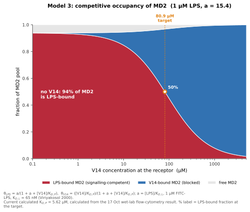
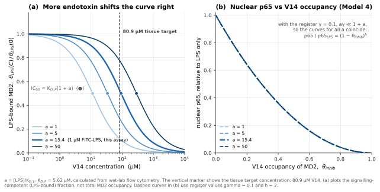
To invert the model for the required dose, ψ has to be isolated additively. Our earlier version factored out KDapp, which is valid for the occupancy expression and for Cheng–Prusoff but not for this inversion. The resulting dose–load relation came out quadratic instead of linear, so the error was in the scaling law, not merely in a prefactor: the over-estimate grows from about 2× at low endotoxin load to about 2500× at high load. The earlier version mispredicted the very quantity it was built to deliver, and only a direct numerical check caught it.
| Assumption | Biological basis | What breaks if it is wrong | How to test it |
|---|---|---|---|
| Receptor occupancy is at equilibrium on the timescale of interest | Binding and unbinding at MD2 are fast relative to the hours over which tissue concentration changes. | The quasi-steady treatment. If dissociation were slow, occupancy would lag concentration and the patch would behave better than modelled, not worse. | Association/dissociation kinetics by SPR; compare koff−1 against the hours-scale delivery profile. |
| Endotoxin is a uniform 1 µM field | A single scalar [L] is needed for the scaled load a = 15.4. | Required dose is linear in [L], so a tenfold higher local load needs roughly tenfold more peptide. A biofilm-associated wound is heterogeneous in space and time. | Endotoxin quantification on wound fluid; model a distribution rather than a point value. |
| V14 acts only through MD2 | It was designed against that interface and shows the expected blockade. | Attribution, not efficacy. Anti-inflammatory action by another route would still help the wound but would break the quantitative chain from occupancy to outcome. | Counter-screen on TLR4-null or MD2-null cells — the blockade should disappear. |
| Total receptor is constant | TLR4 is treated as a fixed pool that LPS and V14 compete for. | Long-horizon predictions. TLR4 is itself NF-κB-inducible, so suppressing signalling may lower receptor number over days, making the model conservative. | TLR4 surface expression by flow cytometry at 24–72 h under blockade. |
To be precise about what has and has not been done: we have measured a blocking concentration for V14 — 25 µM, at a single fixed endotoxin load. We have not measured KD,P. The flow-cytometry assay returns IC50 = KD,P(1 + [L]/KD,L), which at one fixed [L] is KDapp — not KD,P — unless the endotoxin load is varied. Two or three LPS concentrations recover it. Ratios between V14 variants are already identifiable at a single fixed [L], so the variant screen works as planned; it is the absolute affinity that does not come for free. We also ask for a Schild analysis in the same run, because a depressed maximum would invalidate the competitive mechanism that the entire V14 arm assumes — that is the one result that would force us to rebuild this model rather than refit it.
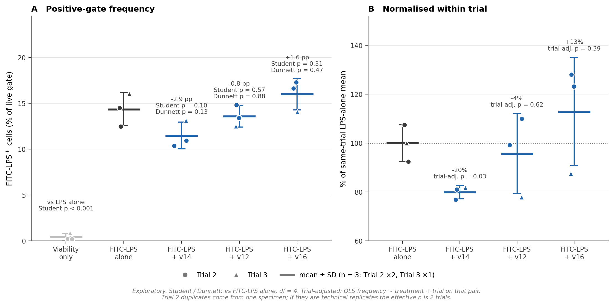
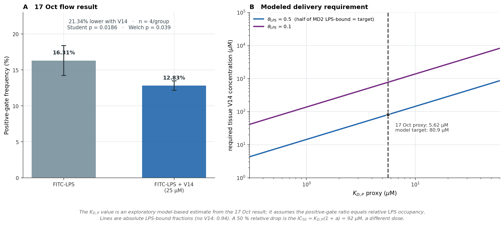
Models 4 and 5
Model 4 carries receptor blockade through to transcriptional output; Model 5 turns that into the quantity our assay actually measures. The Griess assay reads accumulated nitrite, not free NO, and the two differ by roughly 600×. Fitting the model's instantaneous free-NO expression to a Griess curve would compare two different quantities. We fit accumulated nitrite instead.
Models 4 and 5 use Hill functions where a mechanistic model would use a reaction network. This is deliberate coarse-graining. A full NF-κB model — IKK activation, IκBα degradation and resynthesis, p65 nuclear shuttling — is well described in the literature and would add well over a dozen parameters, none of which our planned experiments constrain. What we actually need from this stage is a monotonic, saturating input–output map from receptor occupancy to transcriptional drive, with the right behaviour in both limits. A Hill function is the minimal form with those properties, and its exponent is the one feature of the shape that a dose–response can actually inform.
The honest cost of that choice is dynamics. Real NF-κB signalling oscillates, and a pulsed input can produce a different transcriptional output than its time average would suggest — which matters here, because our patch delivers in pulses. We note this as a limitation rather than claiming the steady-state map is exact.
Model 5 is shaped by the instrument, not by the biology. The chemistry produces free NO, which equilibrates in about 100 s and sits at tens of nanomolar; the Griess assay reads accumulated nitrite, which climbs all day into the micromolar range. These differ by roughly 600×, and the single most consequential decision in this section was to make the model output an integral — ∫Rrel dt — so that the quantity the model reports and the quantity the plate reader measures are the same quantity. Fitting an instantaneous expression to an accumulating measurement is how our earlier version hid a 104× error in the per-cell iNOS rate for as long as it did.
For the same reason the fitted form is reduced to a two-parameter sigmoid. A dose–response curve contains roughly three degrees of freedom; the chain behind it has at least fourteen parameters. Fitting the full chain to that curve would return confident-looking values for quantities the data cannot distinguish, so we fit only IC50NO and napp and report only those.
Model 4 takes the surviving active receptor through a Hill response to nuclear p65, which is the transcriptional state the rest of the chain reads:
Inverting that chain gives the payload concentration required for a target signalling state. This is the expression whose scaling law we had wrong, and it is the one place where KD,P cannot be scaled away: the requirement depends on the wound's endotoxin load, and it is linear in it, not quadratic.
Model 5 then drives iNOS from p65 and converts its output into the two observables, which differ by about 600× and must never be compared to each other:
The right-hand expression is the only one we fit. Everything upstream of it is structure we believe but cannot identify from a sigmoid.
Free NO reaches a quasi-steady state within minutes (1/kscav = 100 s) at tens of nanomolar — around 44 nM — while nitrite accumulates across the whole day and reaches roughly 26 µM at 24 h. The ratio is about 600×.
This distinction is not pedantic; it is how we found a real error. The per-cell iNOS rate in our earlier version was about 104× too high. It had passed review because it gave a plausible steady-state NO concentration — but the scavenging term acts on free NO, while the literature values it had been matched against are nitrite measurements. Matching the right number against the wrong quantity hid a four-order-of-magnitude error, and only writing the two observables down side by side exposed it.
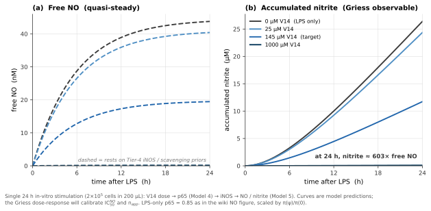
The chain from V14 concentration to nitrite carries at least fourteen parameters, but a dose–response sigmoid contains only about three degrees of freedom. The internal constants are therefore not identifiable from this dataset, and we do not fit them. The fitting routine is written and tested on synthetic data; when the measured Griess CSV arrives it returns exactly two numbers — IC50NO and napp — and those are the only two we will report.
Model 6 reads nitrite as a monotonic index of harm: more nitrite means lower proliferation and higher death. The biology does not straightforwardly support that. Nitric oxide is required for normal repair — iNOS-deficient animals and animals given iNOS inhibitors show delayed re-epithelialisation and reduced collagen deposition and tensile strength, and NO has a central role in the angiogenesis that granulation tissue depends on (Krausz & Friedman, 2015). Macrophage-derived NO also contributes to antimicrobial defence in a wound that is, by assumption here, colonised.
So the true relationship is plausibly biphasic: too little NO impairs healing, too much sustains inflammatory damage, and the therapeutic goal is to move a chronically elevated wound back toward an optimum rather than to drive iNOS output to zero. Our coupling encodes only the descending limb. Within the range a competitive antagonist can reach — partial, reversible blockade of one receptor, against a wound already far above baseline — we think the monotonic approximation is defensible. But it is an approximation, it is not conservative, and a dose–response for healing outcome rather than for nitrite is the experiment that would settle it. We would look for an optimum, not a plateau.
To find which parameters matter most, we ran Morris screening followed by Sobol indices over the full joint prior. We expected kprot,V to dominate delivered dose and Dn to dominate closure time. The computed indices confirm the first and refute the second. Delivered dose is dominated by KD,P (ST = 0.63), the loading CV,0 (0.54) and kprot,V (0.41); closure time by r0 (0.63), with Dn the least influential of the ten factors (ST = 0.014), because tc ∝ Dn−1/2 is a weak dependence and physiology bounds Dn to about 1.5 decades.
An earlier version of this page reported that both expectations had been refuted, with kprot,V ranking fifth at ST = 0.023. That was an artefact of our own code: the analytic surrogate for delivered dose carried a spurious extra factor Λ/δ in the depth average, which cancelled most of the kprot,V dependence. The depth average of C0e−x/Λ over [0, δ] is C̄ = M(1 − e−δ/Λ)/(εtδ), which is what the module's own documentation stated and what it now computes. Correcting it raises kprot,V to third place and removes a tension we had previously had to explain away: the design section argues that kprot,V is the most useful parameter to act on, and the variance ranking now agrees with that instead of contradicting it. We record the error because the corrected result is less flattering to our original framing, not more.
Two caveats keep this honest. A Sobol ranking reflects the width of the priors as much as the physics, and KD,P and CV,0 have the widest ranges. And share of variance is not the same as what we can change: gel thickness Lgel ranks fourth for delivered dose but is a design variable we control directly, while the gel material — porosity, mesh size — contributes essentially nothing. The practical lever and the statistical leader are not the same parameter.
Propagating the full joint prior through to closure gives a result we think is the most important single number in the uncertainty analysis: under the current priors, 18.7 % of sampled wounds never close at all. This is a statement about the priors rather than a prediction for any particular wound, but it is the main reason we keep the death term in Model 6. A model without it would return a finite closure time for every one of those samples, and would quietly convert a chronic wound into a healing one by construction.
One further result constrains how this page should be read. A one-parameter-at-a-time sweep — what any slider performs — captures only the first-order variance: 34 % for delivered dose and 51 % for closure time. Most of the behaviour of the delivery arm, and half of the closure arm, lives in interactions that no single-slider exploration can show. That is why this page reports the variance-based analysis rather than inviting readers to tune one parameter at a time.
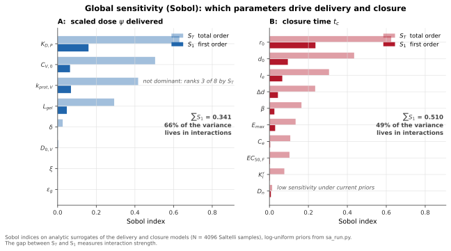
| Assumption | Biological basis | What breaks if it is wrong | How to test it |
|---|---|---|---|
| NF-κB response to receptor activation is a Hill function at steady state | Signalling equilibrates in minutes to hours, far faster than the days over which delivery changes. | Dynamics only. Real NF-κB signalling oscillates, and a pulsed input can give a different transcriptional output than its time average. | Time-resolved p65 nuclear translocation under a pulsed LPS stimulus. |
| Nitrite reports the inflammatory state of the wound | It is the stable, measurable end product of the iNOS arm and rises with inflammatory drive. | The sign of the coupling at low NO, and therefore the direction of benefit at strong blockade — see the warning above. | Healing-outcome dose–response, looking for an optimum rather than assuming monotonicity. |
| One macrophage population, uniformly responsive | The model carries a single cell density and one response curve. | Magnitude. Wound macrophages are a mixed and shifting M1/M2 population, and only part of it is the pro-inflammatory compartment the peptide acts on. | Polarisation markers alongside Nos2 in the qPCR panel. |
| RAW 264.7 and THP-1 responses transfer to human wound macrophages | They are the standard tractable models for TLR4 signalling. | External validity. Cell lines differ from primary wound macrophages in a hyperglycaemic, protease-rich environment. | Repeat the key dose–response on primary monocyte-derived macrophages. |
| Combination | Why it cannot be recovered | What would break it |
|---|---|---|
| Dn · reff | They enter the front speed only as a product, so a fourfold rise in either produces the same doubling of c. | Scratch assay ± mitomycin C; or report front width, since c·wf ∝ Dn and c/wf ∝ reff. |
| rp − d | Only the difference appears in the front speed. The death term is kept for a structural reason, not a fitted one. | Independent proliferation and apoptosis measurements — or sweep it. Never fit it to closure data. |
| the NO chain constants | ≥14 parameters against a ~3-d.o.f. sigmoid. | Nothing cheap. Fit the reduced two-parameter form and report only that. |
| KD,P | The assay returns IC50 = KD,P(1 + [L]/KD,L), so without [L] it is KDapp. | Two or three LPS concentrations. Ratios between variants are already identifiable at fixed [L], so the variant screen works as planned. |
We list these combinations so that the quantities we do report can be trusted. For each of them we either sweep the parameter or report only the identifiable combination. None of them is fitted silently.
Model 6
Model 6 is a Fisher–KPP reaction–diffusion model of the closing wound front. It is the least supported part of the chain: every rate in it is a Tier-4 phenomenological closure, and no planned experiment constrains any of them. We present it as a structured hypothesis that generates testable predictions, not as a quantitative forecast, and we have marked it that way everywhere rather than letting it borrow credibility from Models 1–2.
This is the most important biological caveat on the page. Model 6 describes a fibroblast population repopulating the defect. In real wound healing, fibroblasts build the granulation tissue that fills the wound, but the epithelial surface is closed by keratinocytes migrating in from the wound margins and from hair follicle remnants — a cell type this model does not contain at all.
A deep wound must be filled with granulation tissue before epithelium can cross it, so the two are ordered and fibroblast repopulation is a genuine prerequisite. But they are not the same event, and the one we predict is the earlier one. Every closure time on this page should be read as a granulation-filling time, and as a lower bound on the time to a closed epithelium. Reporting the two separately — and adding a keratinocyte layer before claiming closure times — is the single largest structural improvement available to this model.
Wound closure is a front advancing into empty space, driven by cells that both move and divide. That is precisely the structure a reaction–diffusion equation describes, and Fisher–KPP is its canonical form: a diffusion term for migration, a logistic term for proliferation bounded by a carrying capacity. The logistic bound is not decoration — it represents contact inhibition and finite tissue density, and without it the population would grow without limit behind the front. Radial rather than Cartesian geometry follows from the wound being an approximately circular defect, and it is what makes the area closure fraction – the quantity a clinician actually measures – well defined.
The death term is the important departure, and it is there for a reason the standard model cannot supply. Textbook Fisher–KPP always closes: for any positive proliferation rate a front forms and advances, so every simulated wound heals, eventually. A model with that property is structurally incapable of representing a chronic wound, which is the only kind of wound this project is about. Adding d(Ie) makes the effective rate reff = rp − d, which can be negative — and a wound with reff < 0 does not merely heal slowly, it regresses. That single term is what lets the model express the thing we are trying to treat, and it is why 18.7 % of sampled wounds never close under our priors. It is also what produced the relapse prediction, which we did not anticipate.
We did not build an agent-based model, although cell-level simulation is fashionable for wound healing. The reason is constraint, not computation: an ABM would introduce rules for adhesion, contact inhibition, chemotaxis and division that no experiment on our list could pin down, so it would add parameters without adding evidence, and it would be harder to tell when it was wrong. The continuum model has four parameters in its front behaviour, two of which are degenerate — and we would rather report that degeneracy honestly than bury it inside a simulation with forty.
The same reasoning sets the limits of what we claim. This is a minimal model of one cell population. It has no keratinocytes, no myofibroblast contraction and no angiogenesis, and each of those omissions is recorded above rather than left for a reader to discover.
The model treats the wound as a fibroblast population spreading into a defect with logistic growth and a death term, giving a travelling front. In radial coordinates:
Both arms of the patch enter here and nowhere else. FGF2-G3 raises the proliferation rate through an effect compartment; the inflammatory state Ie, read from the nitrite ratio Model 5 produces, suppresses proliferation and raises death. This is the junction where the V14 arm and the FGF2-G3 arm meet.
ke0 is the effect-compartment rate constant, and its reciprocal is the 18 h drug-effect delay that Model 7 passes each patch's coverage through. It is Tier 4. Chronic behaviour is encoded by rp < d — the tissue cannot repopulate itself — with register values rp = 0.50 and d = 0.51 d−1. The therapy raises reff while drug is present. We do not run the model past closure, and we define tc as the first time the front reaches the centre.
A caution on the last expression. With the register's chronic values, nss is formally negative (−0.02K), not zero. The biological floor is zero and the solver clamps there, but the formula as written is outside its valid range in exactly the untreated regime we apply it to. The whole chronic classification rests on d exceeding rp by 2 %, and both numbers are Tier 4.
Front position, the closure fraction an experimentalist would actually measure, and closure time are then:
And for a pulled front the asymptotic speed and width give the degeneracy recorded in the identifiability table — Dn and reff appear only as a product in the speed, so closure data alone can never separate them:
Reporting the front width alongside its speed breaks the degeneracy, since c·wf ∝ Dn and c/wf ∝ reff. That is exactly why the scratch assay on our wet-lab list asks for width and not just closure rate.
When the drug effect fades and reff turns negative again, the steady state behind the front, nss = K(1 − d/rp), falls to zero. The repopulated tissue then dies back and the front recedes past its starting position. We had assumed a sub-threshold pulse would simply fail to finish. It reverses. A 5-day or 10-day pulse produces temporary apparent healing followed by complete relapse, while 14 days closes a 2 mm wound. The minimum pulse duration for permanent closure grows roughly linearly with wound radius, from about 7 days at 1 mm to 34 days at 5 mm.
This resembles the relapse clinically observed in chronic wounds, and it is a falsifiable prediction rather than a retrofit — the model produced it before we looked for it. It is also the clearest argument for why treatment duration, not peak dose, is the variable that matters for this device. If the mechanism is real, under-treating is actively harmful rather than merely insufficient, because it costs the patient weeks and returns the wound to a worse position than it started from.
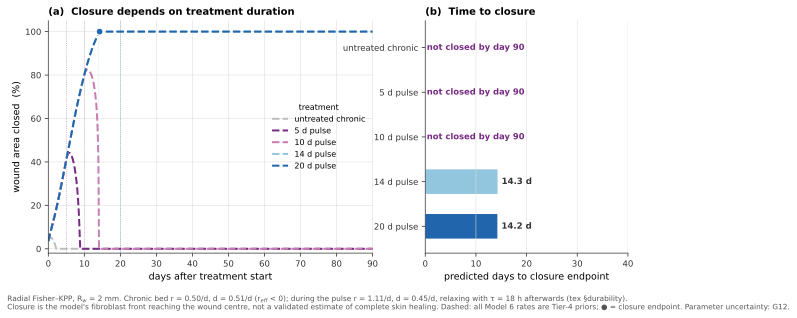
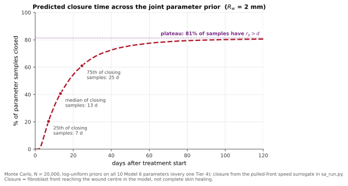
| Assumption | Biological basis | What breaks if it is wrong | How to test it |
|---|---|---|---|
| Fibroblasts respond to FGF2-G3 with literature potency | EC50 and Emax are taken from growth-factor responses in healthy cells. | The size of the whole therapeutic effect. Fibroblasts from chronic wounds are growth-factor hyporesponsive, with reduced receptor expression and impaired downstream signalling (Kim et al., 2003), so Emax in the cells we are actually treating is plausibly lower than modelled. | Dose–response on patient-derived or high-glucose-conditioned fibroblasts, not only on a healthy line. |
| A single fibroblast population with one proliferation rate | Logistic growth with a carrying capacity is the standard minimal closure model. | Chronic wound fibroblasts include a senescent fraction that does not proliferate at all and secretes inflammatory mediators. A mean rate averages over two populations behaving differently. | Senescence markers on wound-edge biopsies; split the population if the fraction is large. |
| Migration is diffusive | Random-walk spreading gives the Fisher–KPP form and the travelling front. | Front shape. Real fibroblast migration is directed by matrix alignment and chemotactic gradients, which diffusion does not represent. | Scratch assay reporting front width as well as speed — width is also what breaks the Dn/reff degeneracy. |
| The wound is a flat circular defect of uniform depth | It makes the radial geometry tractable and the closure fraction well defined. | Geometric realism. Clinical ulcers are irregular, undermined and variable in depth, and contraction — a myofibroblast-driven mechanism absent from this model — contributes substantially to area reduction in vivo. | Planimetry on real wound shapes; add a contraction term before comparing to clinical area data. |
| No infection dynamics | The LPS load is an external constant. | Long-horizon predictions. A biofilm that grows or is disrupted changes [L] over exactly the multi-day timescale this model runs on. | Bioburden over time; couple a bacterial growth term to [L]. |
Two numerical corrections belong here, because both ran against our written equation reference. The planar closure estimate Rw/c is a lower bound, not an upper one: curvature does accelerate the front by 5–21 % relative to Cartesian, but Rw/c neglects the time taken to form the travelling front, and that transient outweighs the curvature gain, so radial closure exceeds Rw/c by 4–15 %. And the Jensen gap, which our reference quoted as 15 %, recomputes for this geometry to 0.2–36 % with a median of 2.7 %: the inherited figure was neither typical nor an upper bound. The gap is small across most of the parameter space but reaches 36 % in the corner that matters most, and it always errs optimistic.
Model 7
Model 7 runs the chain backwards, from a wound to a device specification. One patch keeps tissue above the 145 µM V14 target for 8.7 h (5.4–11.5 h across the ranges of sink depth and diffusivity). No wound in the 1–5 mm range closes on a single patch: the continuous cover needed is about 18–95× what one patch supplies. But the patch need only be changed every 26 h — so for the 2.5 mm gel as built, a once-daily dressing change is enough. That is the single biggest change from the earlier 0.5 mm design, which demanded a change every 6.8 h, four times a day. The margin is real but thin: a daily change runs at a 36 % duty cycle against a 33 % threshold, and that threshold is computed from Tier-4 closure parameters.
The loading requirement follows straight from the transport model: to hold a target concentration at depth δ in tissue, the gel must start with enough that the released fraction, diluted into the tissue pore volume, still clears it.
CV,target is set to 145 µM, derived from the 14 October flow panel: KD,P ≥ 10.08 µM and CV,target = KD,P(a − 1), the concentration at which half of the MD2 pool is LPS-bound at 1 µM endotoxin. Because KD,P is a lower bound, so is the target. Every number below — 8.7 h, 26 h, 47 µM, RV ≈ 47 — inherits that assumption.
Models 1–6 answer a forward question: given a patch, what happens? That is the natural direction to compute in, but it is the wrong direction for design. A team deciding how thick to cast a gel, how much peptide to load, and how often to tell a clinician to change a dressing needs the inverse map — from a required outcome to a device specification. Model 7 exists to run the chain backwards, and it is the only part of this work whose output is a set of numbers someone could build to.
Mathematically the inversion is where approximations become dangerous, which is why we flag it twice. Isolating the required dose demands that ψ be separated additively; factoring out KDapp instead — a step that is perfectly valid for the occupancy expression and for Cheng–Prusoff — turns a linear relation into a quadratic one. The error was in the scaling law rather than in a constant, which is exactly the kind of mistake forward simulation does not reveal and a direct numerical check does.
The delay between drug arriving and tissue responding is represented by an effect compartment rather than by modelling the intervening biology. This is the standard pharmacodynamic device for a response that lags exposure, and it is appropriate here because the lag spans transcription, translation and matrix turnover — processes we have no intention of resolving individually. It buys the right qualitative behaviour with one parameter, ke0, at the price of that parameter being Tier 4.
Finally, the output is deliberately expressed as a maximum change interval rather than as a dose. A dose is a number a chemist can hit; an interval is an instruction a clinician can follow, and it turns out to depend on the patch rather than on the wound, which makes it a genuine device specification rather than a per-patient calculation. Reporting the result in that form is what turned the modelling into something the wet lab and the eventual user could both act on.
We began by writing retention up as something to be maximised. Running the coupled solve showed otherwise. Retention works by binding, so the free concentration that drives delivery is Ctotal/RV: residence time is gained and driving concentration is lost in equal proportion. Whether that trade pays depends entirely on how much headroom the peak tissue concentration has above the target.
The redesign flipped this conclusion, and we are flagging it rather than quietly restating it. At the old 0.5 mm / 738 µM design the peak was only 1.9× the target, so any retention shortened the window and RV ≈ 3 left none at all. At 2.5 mm and 3 mg mL−1 the peak is 522 µM, about 3.6× the target, and there is room to trade: the window now lengthens from 8.7 h at RV = 1 to 9.4 h at RV = 1.5 and 9.5 h at RV = 2, before falling back to 7.8 h at RV = 3. So a shallow optimum does exist. We still do not recommend pursuing it: the gain is under an hour, and the same hour is bought far more cheaply by casting the gel slightly thicker.
The solubility limit that used to sit behind this has moved out of the way entirely. A 145 µM target at 500 µm depth needs a total loading of only 47 µM (64 µg mL−1) at frel = 0.5, which is 2 % of the 3 mg mL−1 the team has now dissolved. Retention would only become unformulable above RV ≈ 47.
And for V14 specifically, the chemistry is not available. Neither heparin nor alginate-sulfate can help: both are strongly anionic, and V14 carries a net charge of −2 with no Lys, Arg or His, so they repel. Retaining V14 in alginate would require covalent tethering, which means the two arms of the patch would need different chemistry. We abandoned retention as a design direction on these three grounds together.
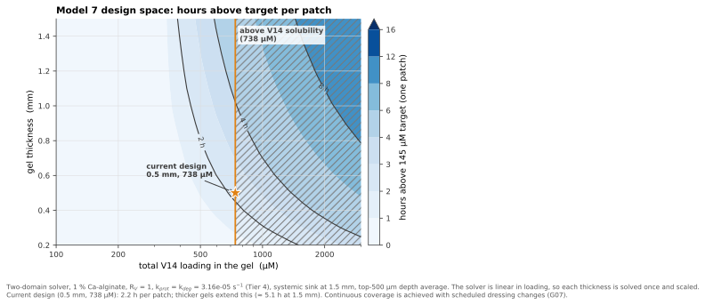
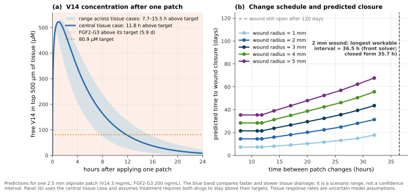
Combining delivery with closure gives the end-to-end result, and it takes the form of a specification rather than a prediction. Each patch's 8.7 h of cover is passed through the 18 h drug-effect delay, which sets a maximum change interval of 26 h — and that interval is a property of the patch, not the wound. Wound size changes only how long treatment must continue, not how often the dressing is changed. Repeat dosing is therefore part of the design, not a fallback for a patch that failed to release slowly.
Why does the interval come out at 26 h? The drug effect averaged over a cycle equals the fraction of time a patch keeps tissue above target. Above 2.3 % the wound stops getting worse. To reach the density we count as closed, the average must exceed 33 %, so 8.7 h of cover sustains closure for change intervals up to about 26 h. A once-daily change needs 7.9 h of cover per patch, and the 2.5 mm patch supplies 8.7 h — a duty cycle of 36 % against a 33 % requirement.
Read that margin carefully. It is about 10 %, and the 33 % threshold behind it is computed entirely from Tier-4 closure parameters with no planned experiment. A 15 % shortfall in coverage — well inside the 5.4–11.5 h band that the tissue parameters alone produce — would put a daily change back outside the envelope. The honest claim is that once-daily dosing is predicted to work, not demonstrated to; the design should not be trimmed further on the strength of it.
Gel thickness and dermal drainage, not gel chemistry, set the single-patch window. Thickness is the strongest design lever, and it is the one the team pulled: 0.5, 1.0, 1.5 and 2.5 mm gels give 3.4, 5.5, 6.9 and 8.7 h above 145 µM. The gain is far less than proportional — a 25× larger reservoir buys about 4× the hours — because a thicker gel holds the peptide longer and the register degrades it inside the gel at the same rate as in serum. That is also why the next millimetre is poor value: 4 mm gives only 10 h. By contrast, reducing kprot thirtyfold lengthens the window to 9.5 h, and the best retention adds under an hour — both smaller than the 5.4–11.5 h spread the tissue parameters produce.
Finally, FGF2-G3 is not the constraint. Even without any retention the 2.5 mm gel keeps it above its EC50 for 5.4 days, about five times the change interval. The closure model requires both arms to be satisfied at once, but the FGF2-G3 condition is met continuously after the first few minutes and never binds. Adding alginate-sulfate to hold it for weeks would be wasted effort when the dressing comes off daily. V14 sets the schedule.
Retention enters as a retardation factor multiplying the time derivative. For a saturable binder such as heparin-functionalised alginate it depends on concentration; for simple partitioning it is a constant:
The last line is the whole argument against retention for this device, and it is also the modelling error we made and corrected: the loaded concentration is the total, so the free concentration driving delivery is Ctot/RV. Treating the loading as free puts RV times more drug into the model than solubility allows, and over-predicts sustained release by orders of magnitude.
This build sets RV = 1 and uses none of these. The gel is plain calcium alginate, with no heparin and no sulfation. The equations are recorded because they define the counterfactual this section analyses, and because a future build using covalent tethering would need them.
The closure side of this inversion rests entirely on Tier-4 closures, and the treated state (FGF2-G3 at EC50, V14 at ψ50) is a scenario we chose rather than one we measured. The structure of the result — hours of cover against weeks of need, and the existence of a maximum change interval — should hold. The exact interval may not.
Iteration
Running the code corrected several statements in our written equation reference and did not support two of our predictions. We record them here so that future teams can see how the model was refined, and so that no number on this page carries more confidence than it earned.
Our original design sensed wound nitric oxide with a NorR/PnorV promoter and responded by secreting the peptide — a closed-loop device that switches itself off. The promoter activity experiment did not work. Rather than record a failed experiment and move on, we asked the model whether the design could have worked at all.
For NO diffusing through a porous layer while being consumed, the steady penetration depth is Ld = √(Deff/kdecay). Using a half-life of 0.09–2 s and sweeping the tortuosity group over its plausible range gives Ld = 11–93 µm, everywhere in the swept range. The bacterial-cellulose and hydrogel stack of the earlier design was 0.5–3 mm thick. Across the whole range, NO reaching the chassis is at most 5×10−3 of wound NO even at the thinnest stack — far below any plausible NorR activation threshold. The problem is geometric, not biological, and no promoter engineering could have fixed it.
The opposite bound leads to the same place. Measured in vivo wound NO (~3.18 µM) sits above the likely half-activation constant of the promoter, so had NO reached the chassis the promoter would have been saturated and permanently on. Either way the design had no usable dynamic range. We removed the sensing branch, but kept its equations: the two-layer transport operator became Model 1, and the expression and secretion kinetics became an upstream production model for recombinant V14 and FGF2-G3. The result is that NO is now an output of the model and never an input, and the device is open-loop and two-armed.
We also found one modelling error during solver verification, and we note it because it is easy to repeat. With retention, the loaded concentration has to be treated as the total (free + bound), so the free initial concentration is Ctotal/RV. Treating the loading as free puts RV times more drug into the model than the solubility limit allows, and over-predicts sustained release by orders of magnitude.
Model → wet lab
The model is meant to guide what the wet lab does next. The experiments below are listed in priority order, ranked by how much each one would improve the model.
One limitation. If FGF2-G3 is assayed on fibroblasts and V14 on RAW 264.7 cells, the two arms are validated in different cell systems and cannot be validated together in vitro. A co-culture or sequential conditioned-medium experiment would be needed to test the combined effect directly.
Conclusion
The modelling changed the project twice before it ever described it. The peptide screen rejected our iteration-1 candidate on developability grounds and sent us to de novo design, which produced V14. The NO penetration calculation showed that our original closed-loop sensor could not have worked at any promoter strength, and turned the device into an open-loop two-armed patch. Neither conclusion came from an experiment that failed; both came from asking the model a question the experiment could not answer.
What the chain says about the device as built is consistent across every model in it. The 2.5 mm alginate patch releases its mobile dose over hours and keeps tissue above the 145 µM V14 target for about 8.7 hours, while closing a wound takes days to weeks. A single patch therefore still cannot close a wound, and repeat application remains structural. But the patch need only be changed every 26 h, so a once-daily dressing change closes the wound — ordinary clinical practice rather than the four-times-daily schedule the earlier 0.5 mm design demanded. Thickness was the lever that did it, and the margin is about 10 % on Tier-4 closure parameters: predicted, not demonstrated.
Retention is still not worth pursuing, though no longer because it fails. At this loading a shallow optimum does exist near RV ≈ 1.5–2, but it buys under an hour, the same hour is cheaper to buy with thickness, and for V14 it would need chemistry we do not have. FGF2-G3 lasts 5.4 days without it, so V14 sets the schedule.
We are equally clear about what the chain does not establish. Models 1–2 are predictive now. Models 3–5 are predictive in scaled form and wait only on calibration. Model 6 is a hypothesis built on Tier-4 parameters with no experiment behind it, and Model 7 inherits that uncertainty wherever it touches closure. The wet-lab experiments listed above are ordered by how much each would narrow that gap, and the first three are cheap.
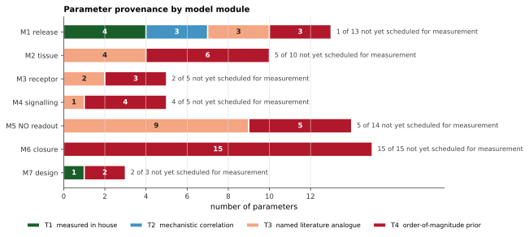
Sources
Every source cited on this page, with a resolvable identifier. Parameter provenance tiers and the full assumption register are in the V3 equation-reference document; this list covers the claims made in the prose above.